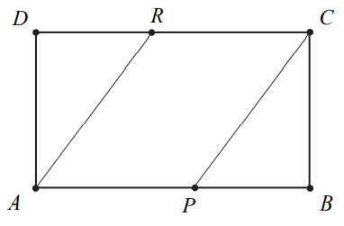

Matura 2020 czerwiec
Wartość wyrażenia \(x^2-6x+9\) dla \(x=\sqrt{3}+3\) jest równa
A.\( 1 \)
B.\( 3 \)
C.\( 1+2\sqrt{3} \)
D.\( 1-2\sqrt{3} \)
B
Liczba \(\frac{2^{50}\cdot 3^{40}}{36^{10}}\) jest równa
A.\( 6^{70} \)
B.\( 6^{45} \)
C.\( 2^{30}\cdot 3^{20} \)
D.\( 2^{10}\cdot 3^{20} \)
C
Liczba \(\log_5\sqrt{125}\) jest równa
A.\( \frac{2}{3} \)
B.\( 2 \)
C.\( 3 \)
D.\( \frac{3}{2} \)
D
Cenę \(x\) pewnego towaru obniżono o \(20\%\) i otrzymano cenę \(y\). Aby
przywrócić cenę \(x\), nową cenę \(y\) należy podnieść o
A.\( 25\% \)
B.\( 20\% \)
C.\( 15\% \)
D.\( 12\% \)
A
Zbiorem wszystkich rozwiązań nierówności \(3(1-x)\gt 2(3x-1)-12x\) jest przedział
A.\( \left(-\frac{5}{3};+\infty \right) \)
B.\( \left(-\infty;\frac{5}{3} \right) \)
C.\( \left(\frac{5}{3};+\infty \right) \)
D.\( \left(-\infty;-\frac{5}{3} \right) \)
A
Suma wszystkich rozwiązań równania \(x(x-3)(x+2)=0\) jest równa
A.\( 0 \)
B.\( 1 \)
C.\( 2 \)
D.\( 3 \)
B
Funkcja kwadratowa \(f\) jest określona wzorem \(f(x)=a(x-1)(x-3)\). Na rysunku
przedstawiono fragment paraboli będącej wykresem tej funkcji. Wierzchołkiem tej paraboli jest punkt
\(W = (2,1)\).  Współczynnik
\(a\) we wzorze funkcji \(f\) jest równy
Współczynnik
\(a\) we wzorze funkcji \(f\) jest równy
Współczynnik
\(a\) we wzorze funkcji \(f\) jest równy A.\( 1 \)
B.\( 2 \)
C.\( -2 \)
D.\( -1 \)
D
Funkcja \(f\) została określona w zadaniu 7.
Największa wartość funkcji \(f\) w przedziale \(\langle 1, 4\rangle \) jest równa
Największa wartość funkcji \(f\) w przedziale \(\langle 1, 4\rangle \) jest równa
A.\( -3 \)
B.\( 0 \)
C.\( 1 \)
D.\( 2 \)
C
Funkcja \(f\) została określona w zadaniu 7.
Osią symetrii paraboli będącej wykresem funkcji \(f\) jest prosta o równaniu
Osią symetrii paraboli będącej wykresem funkcji \(f\) jest prosta o równaniu
A.\( x=1 \)
B.\( x=2 \)
C.\( y=1 \)
D.\( y=2 \)
B
Równanie \(x(x-2)=(x-2)^2\) w zbiorze liczb rzeczywistych
A.nie ma rozwiązań.
B.ma dokładnie jedno rozwiązanie: \(x = 2\).
C.ma dokładnie jedno rozwiązanie: \(x = 0\).
D.ma dwa różne rozwiązania: \(x =1\) i \(x = 2\).
B
Na rysunku przedstawiono fragment wykresu funkcji liniowej \(f\) określonej wzorem
\(f(x)=ax+b\). Współczynniki
\(a\) oraz \(b\) we wzorze funkcji \(f\) spełniają zależność
A.\( a+b\gt0 \)
B.\( a+b=0 \)
C.\( a\cdot b\gt0 \)
D.\( a\cdot b\lt0 \)
D
Funkcja \(f\) jest określona wzorem \(f(x)=4^{-x}+1\) dla każdej liczby
rzeczywistej \(x\). Liczba \(f\left(\frac{1}{2}\right)\) jest równa
A.\( \frac{1}{2} \)
B.\( \frac{3}{2} \)
C.\( 3 \)
D.\( 17 \)
B
Proste o równaniach \(y=(m-2)x\) oraz \(y=\frac{3}{4}x+7\) są równoległe. Wtedy
A.\( m=-\frac{5}{4} \)
B.\( m=\frac{2}{3} \)
C.\( m=\frac{11}{4} \)
D.\( m=\frac{10}{3} \)
C
Ciąg \((a_n)\) jest określony wzorem \(a_n=2n^2\) dla \(n\ge1\). Różnica
\(a_5-a_4\) jest równa
A.\( 4 \)
B.\( 20 \)
C.\( 36 \)
D.\( 18 \)
D
W ciągu arytmetycznym \((a_n)\), określonym dla \(n\ge1\), czwarty wyraz jest równy
\(3\), a różnica tego ciągu jest równa \(5\). Suma \(a_1+a_2+a_3+a_4\) jest równa
A.\( -42 \)
B.\( -36 \)
C.\( -18 \)
D.\( 6 \)
C
Punkt \(A=\left(\frac{1}{3},-1\right)\) należy do wykresu funkcji liniowej \(f\)
określonej wzorem \(f(x)=3x+b\). Wynika stąd, że
A.\( b=2 \)
B.\( b=1 \)
C.\( b=-1 \)
D.\( b=-2 \)
D
Punkty \(A, B, C, D\) leżą na okręgu o środku w punkcie \(O\). Kąt środkowy \(DOC\)
ma miarę \(118^\circ \) (zobacz rysunek). Miara kąta \(ABC\) jest równa
A.\( 59^\circ \)
B.\( 48^\circ \)
C.\( 62^\circ \)
D.\( 31^\circ \)
D
Prosta przechodząca przez punkty \(A=(3,-2)\) i \(B=(-1,6)\) jest określona
równaniem
A.\( y=-2x+4 \)
B.\( y=-2x-8 \)
C.\( y=2x+8 \)
D.\( y=2x-4 \)
A
Dany jest trójkąt prostokątny o kątach ostrych \(\alpha \) i \(\beta \) (zobacz
rysunek). Wyrażenie \(2\cos
\alpha -\sin \beta\) jest równe
A.\( 2\sin \beta \)
B.\( \cos \alpha \)
C.\( 0 \)
D.\( 2 \)
B
Punkt \(B\) jest obrazem punktu \(A=(-3,5)\) w symetrii względem początku układu
współrzędnych. Długość odcinka \(AB\) jest równa
A.\( 2\sqrt{34} \)
B.\( 8 \)
C.\( \sqrt{34} \)
D.\( 12 \)
A
Ile jest wszystkich dwucyfrowych liczb naturalnych utworzonych z cyfr: \(1, 3, 5,
7, 9\), w których cyfry się nie powtarzają?
A.\( 10 \)
B.\( 15 \)
C.\( 20 \)
D.\( 25 \)
C
Pole prostokąta \(ABCD\) jest równe \(90\). Na bokach \(AB\) i \(CD\) wybrano –
odpowiednio – punkty \(P\) i \(R\), takie, że \(\frac{|AP|}{|PB|}=\frac{|CR|}{|RD|}=\frac{3}{2}\)
(zobacz rysunek).  Pole
czworokąta \(APCR\) jest równe
A.\( 36 \)
B.\( 40 \)
C.\( 54 \)
D.\( 60 \)
C
Cztery liczby: \(2, 3, a, 8\), tworzące zestaw danych, są uporządkowane rosnąco.
Mediana tego zestawu czterech danych jest równa medianie zestawu pięciu danych: \(5, 3, 6, 8, 2\).
Zatem
A.\( a=7 \)
B.\( a=6 \)
C.\( a=5 \)
D.\( a=4 \)
A
Przekątna sześcianu ma długość \(4\sqrt{3}\). Pole powierzchni tego sześcianu jest
równe
A.\( 96 \)
B.\( 24\sqrt{3} \)
C.\( 192 \)
D.\( 16\sqrt{3} \)
Dwa stożki o takich samych podstawach połączono podstawami w taki sposób jak na
rysunku. Stosunek wysokości tych stożków jest równy \(3:2\). Objętość stożka o krótszej wysokości
jest równa \(12 \text{cm}^3\).
Objętość bryły utworzonej z połączonych stożków jest równa
A.\( 20 \text{cm}^3 \)
B.\( 30 \text{cm}^3 \)
C.\( 39 \text{cm}^3 \)
D.\( 52{,}5 \text{cm}^3 \)
B
Rozwiąż nierówność \(2(x-1)(x+3)\gt x-1\).
Rozwiąż równanie \((x^2-1)(x^2-2x)=0\)
Wykaż, że dla każdych dwóch różnych liczb rzeczywistych \(a\) i \(b\) prawdziwa
jest nierówność \[a(a-2b)+2b^2\gt 0\]
Trójkąt \(ABC\) jest równoboczny. Punkt \(E\) leży na wysokości \(CD\) tego
trójkąta oraz \(|CE|=\frac{3}{4}|CD|\). Punkt \(F\) leży na boku \(BC\) i odcinek \(EF\) jest
prostopadły do \(BC\) (zobacz rysunek). Wykaż, że \(|CF|=\frac{9}{16}|CB|\)
Rzucamy dwa razy symetryczną sześcienną kostką do gry, która na każdej ściance ma
inną liczbę oczek – od jednego oczka do sześciu oczek. Oblicz prawdopodobieństwo zdarzenia \(A\)
polegającego na tym, że co najmniej jeden raz wypadnie ścianka z pięcioma oczkami.
Kąt \(\alpha\) jest ostry i spełnia warunek \(\frac{2\sin \alpha +3\cos \alpha
}{\cos \alpha }=4\). Oblicz tangens kąta \(\alpha \).
Dany jest kwadrat \(ABCD\), w którym \(A=\left(5,-\frac{5}{3}\right)\). Przekątna
\(BD\) tego kwadratu jest zawarta w prostej o równaniu \(y=\frac{4}{3}x\). Oblicz współrzędne punktu
przecięcia przekątnych \(AC\) i \(BD\) oraz pole kwadratu \(ABCD\).
Wszystkie wyrazy ciągu geometrycznego \((a_n)\), określonego dla \(n\ge1\), są
dodatnie. Wyrazy tego ciągu spełniają warunek \(6a_1-5a_2+a_3=0\). Oblicz iloraz \(q\) tego ciągu
należący do przedziału \(\langle 2\sqrt{2}, 3\sqrt{2} \rangle \).
Dany jest ostrosłup prawidłowy czworokątny \(ABCDS\), którego krawędź boczna ma
długość \(6\) (zobacz rysunek). Ściana boczna tego ostrosłupa jest nachylona do płaszczyzny podstawy
pod kątem, którego tangens jest równy \(\sqrt{7}\). Oblicz objętość tego ostrosłupa.